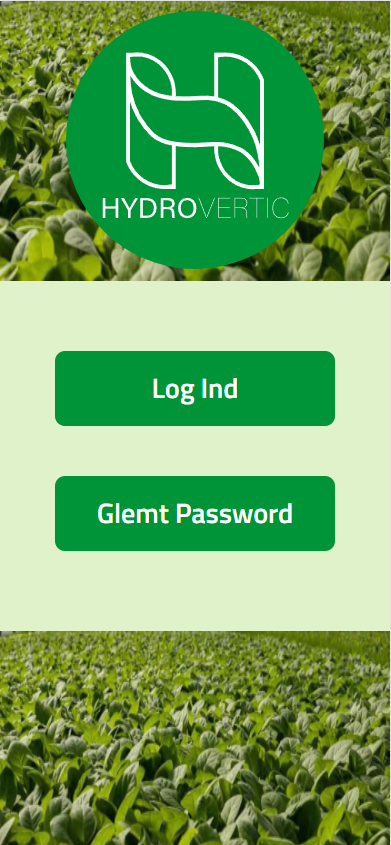

The assignment was to make a better user interface of their software for the monitoring process and add in Javascript.
Hydrovertic wanted their software to seem more trustworhty and have a few more functions for their target group.
We got 3 different assignments to choose from and we chose to go with the software. We found it very exciting to choose something that the other groups didn't go with and to make an improved user interface was something we haven't tried yet. We had a lot of free choices with this one, because they didn't really have any preferences other than the measuringvalues. So we added some extra functions that we came up with doing research at the target group.
Hydrovertic make technology for vertical farming and is going to have clients all over the world, specifically in Singapore in a few years. They have a software already, but the user interface looks unmodern and isn't what they wanted it to be, but it works technically with a not so updated user interface.
The software they got at the moment, measures 5 different values at the plants, such a CO2, temperature, PH and so on, via a measurement device Hydrovertic have attached to their vertical farming. We made the software as an app for the phone, so the gartners could take it with them on their own phone, to both save money for the companies and to not need a computer every time you need to watch the values at the plants. We made its possible to get an alert on the phone if some or one of the values had an error on it.
The thing i specifically made by my self on this app was the plant library, where you can see and add the plants you have on your vertical farming device. In this library you can search for plants, and that's the javascript function i made for this project. I also made the search table so it wouldn't be case sensitive.
If you wanna watch the site for yourself, click the button below. You would want to watch it as a responsive site because its made mainly for iphone.